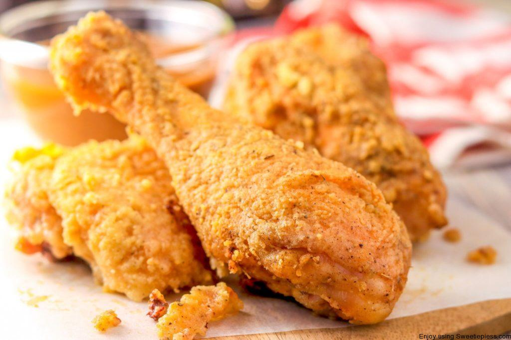

Fry Chicken

Description
This is a recipe on fry chicken a dish that should always be on a lunch table when you have a get together or just trying to teat yourself to something amazing
Ingredients
- 1 (10 ounce) boneless, skinless chicken breast or drumsticks
- salt to taste
- 1 tablespoon blanched almond flour
- ½ cup blanched almond flour
- ½ teaspoon freshly ground black pepper
- ½ teaspoon granulated garlic
- ¼ cup avocado oil for frying, or as needed
Steps
- Remove chicken breast from the fridge 20 minutes before preparing the dish. Cut into 4 equal portions. Place each chicken piece in between plastic wrap and pound with a meat tenderizer to 1/4-inch thickness. Lightly salt chicken on both sides and dust with 1 tablespoon almond flour.
- Combine 1/2 cup almond flour, Grana Padano cheese, 1/2 teaspoon salt, pepper, garlic, and paprika in a shallow bowl. Break egg into a second shallow bowl and whisk in milk. Dip each chicken piece first in egg mixture, shaking off excess, then into the almond mixture, pressing down to insure complete coverage. Place breaded chicken pieces on a plate.
- Pour enough avocado oil into a large skillet to cover the bottom by a 1/4-inch. Heat over medium-high heat until it shimmers but is not smoking. Carefully lower each piece of chicken into the hot oil and cook for 2 minutes. Turn and cook on the other side until internal temperature reaches 165 degrees F (74 degrees C), about 2 more minutes. Drain chicken on a paper towel-lined plate and serve with lemon wedges.